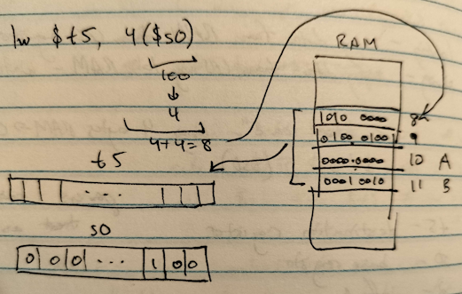
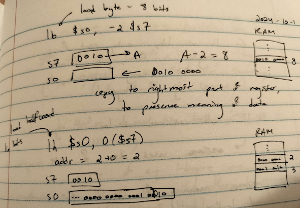
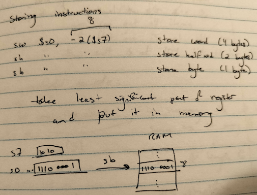

MIPS assembly continued
MIPS addresses are 4 bytes long, but so are MIPS instructions - so we need to use addressing modes to reach certain parts of memory.
Example -
lw $t5, 2($s0)
2 is the offset, parens indicate that $s0 should be treated as a memory address.
Loading - lw, lh, and lb


Storing - sw, sh, and sb

Storing and loading - signed integers
For lh and lb, only part of the register is filled, so it will autofill remaining bits depending on the sign of the integer.
lb and lh assume that we load a signed int.
They use the idea of 2's complement to preserve the meaning of data.
- For numbers with leading zeroes,
lhandlbfill the left side with zeroes - For numbers with leading ones,
lhandlbfill the left side with ones to preserve negativity